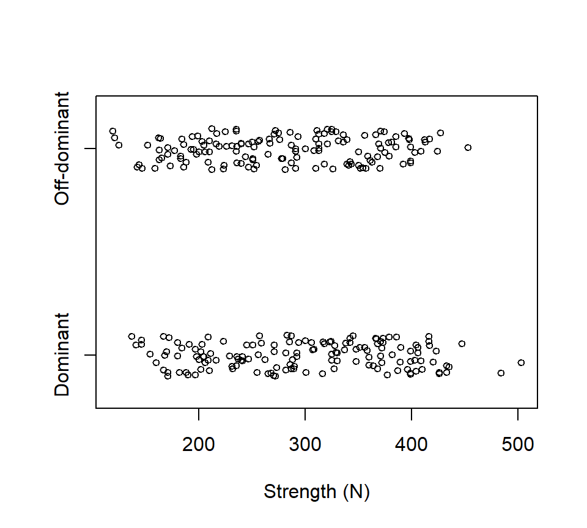
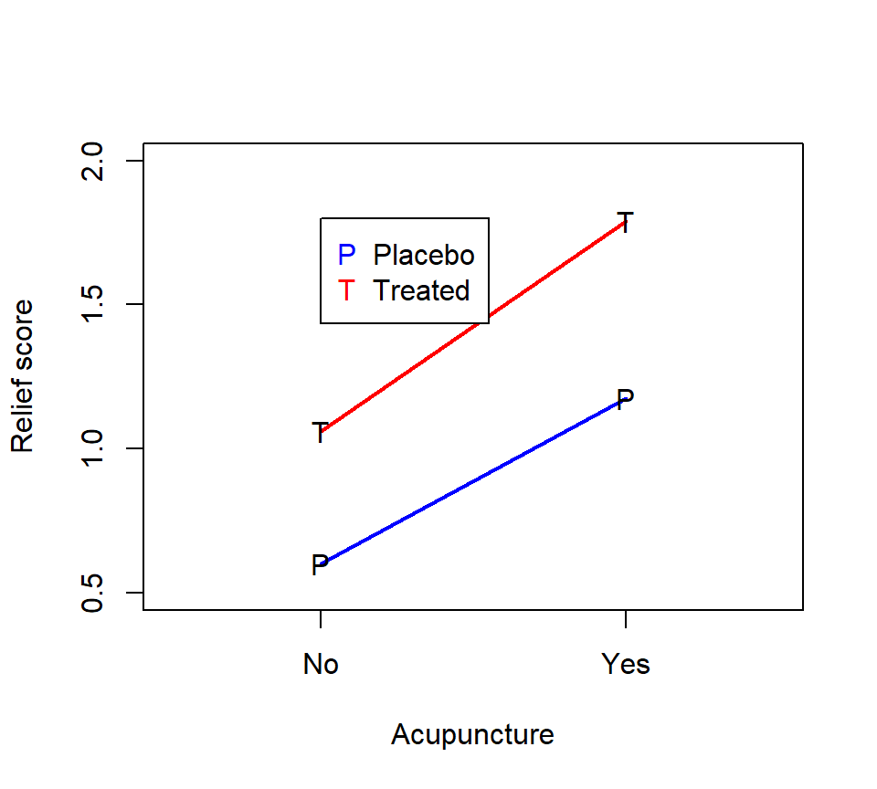
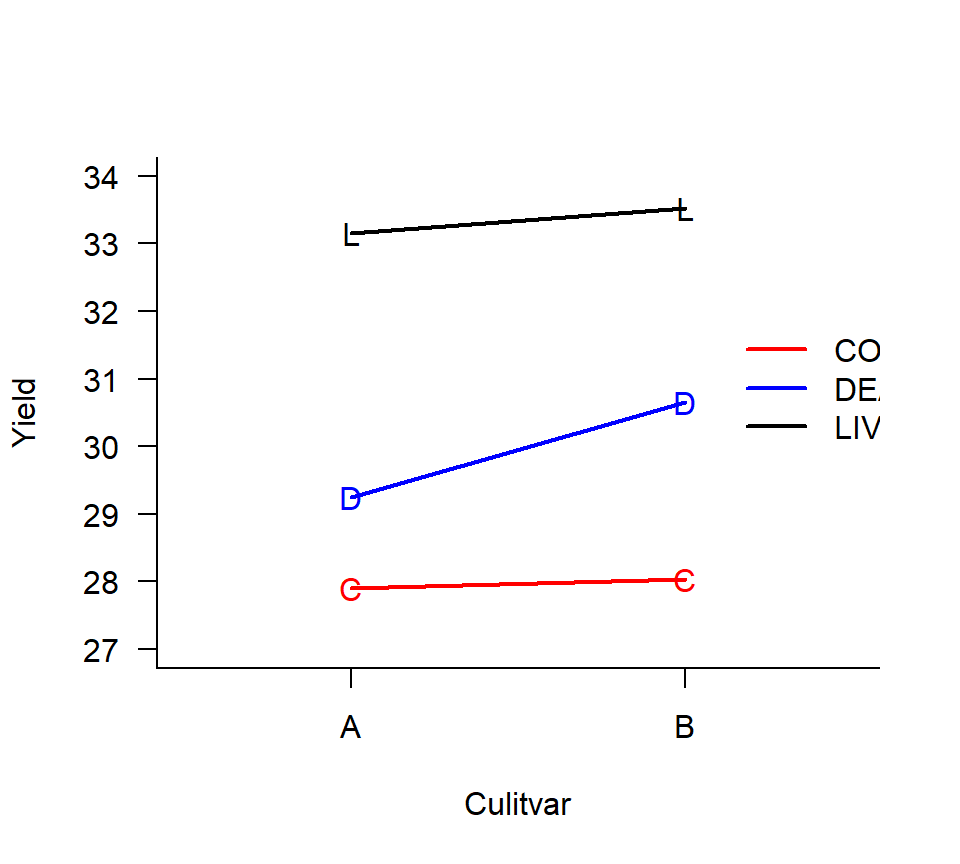
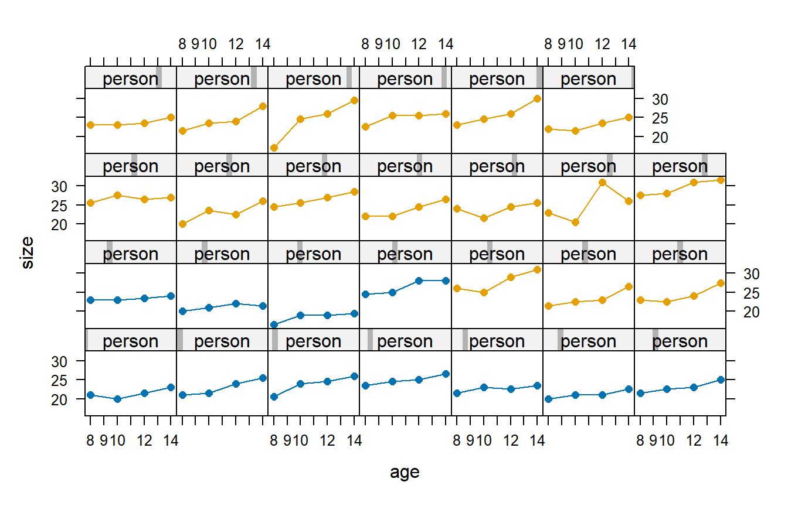

Chapter 9 Blocked designs
9.1 Randomized complete block designs
The strength of people’s grip in their dominant or off-dominant hand was measured for \(n=145\) people. Data are below, with strength measured in Newtons of force.  Suppose we wanted to use these data to ask if there was a difference in strength between people’s dominant and off-dominant hands. One (wrong) way to analyze these data is with a two-sample \(t\)-test:
> with(grip, t.test(x = Dominant, y = Off, var.equal = TRUE))
Two Sample t-test
data: Dominant and Off
t = 1.7844, df = 288, p-value = 0.07542
alternative hypothesis: true difference in means is not equal to 0
95 percent confidence interval:
-1.812768 36.998975
sample estimates:
mean of x mean of y
298.6552 281.0621 The two-sample \(t\)-test is the wrong test for these data because it fails to account for the fact that the data are paired. The correct way to analyze these data is to calculate the difference in grip strength for each individual, and then to treat the sample of \(n=145\) differences as a single random sample from a population of differences. We then test the null hypothesis that the average of this population of differences is equals 0 against the alternative that the average difference is different from 0.
> with(grip, t.test(x = Dominant - Off))
One Sample t-test
data: Dominant - Off
t = 6.4883, df = 144, p-value = 1.306e-09
alternative hypothesis: true mean is not equal to 0
95 percent confidence interval:
12.23358 22.95263
sample estimates:
mean of x
17.5931The paired analysis estimates the average difference in grip strength more precisely, resulting in a narrower CI and a smaller \(p\)-value. The paired analysis is more precise because the experimental error has been reduced by removing person-to-person variability.
Taking differences only works when we are comparing two treatments. When we are comparing more than two treatments, we need a more general strategy. Blocking is a technique that reduces experimental error (and hence increases precision) by grouping heterogeneous experimental units into blocks of homogeneous EUs.
The canonical example of blocking comes from agriculture. Suppose we want to compare the effects of 3 different fertilizers (call them A, B, and C) on crop yield. Suppose a field can be divided into 12 plots (EUs), and there is a known east-west elevation slope to the field. In a CRD, treatments are randomly assigned to EUs. CRDs are appropriate when EUs are homogeneous. Here, we know that there is a difference between EUs based on where they lie along the east-west gradient. Consequently, a better design is to block against slope by grouping EUs into blocks of plots at similar locations along the east-west gradient. Treatments are then randomly assigned within blocks.
This is a randomized complete block design (RCBD). A RCBD consists of several blocks, each of which is divided into several homogeneous EUs. Treatments are randomly assigned to EUs within each block. A blocked design is “complete” when each level of the experimental treatment is represented at least once in every block. In contrast, a blocked design is “incomplete” when some experimental treatments are missing from one or more blocks.25 A standard RCBD is one in which every treatment (or every treatment combination) is assigned to exactly one EU in each block.
The classical way to analyze data from an RCBD is to include the block as an additional factor in the ANOVA, albeit a factor that is not engaged in interactions with the treatment factors. For the grip strength data, we would treat “subject” (the person) as a blocking factor.
## subject hand strength
## AA : 2 dominant:145 Min. :119.0
## AB : 2 off :145 1st Qu.:216.2
## AC : 2 Median :288.5
## AD : 2 Mean :289.9
## AE : 2 3rd Qu.:362.5
## AF : 2 Max. :503.0
## (Other):278## Analysis of Variance Table
##
## Response: strength
## Df Sum Sq Mean Sq F value Pr(>F)
## subject 144 1952993 13562 25.443 < 2.2e-16 ***
## hand 1 22440 22440 42.098 1.306e-09 ***
## Residuals 144 76758 533
## ---
## Signif. codes: 0 '***' 0.001 '**' 0.01 '*' 0.05 '.' 0.1 ' ' 1Observe that the \(p\)-value for testing an effect of “hand” is exactly the same as the \(p\)-value from the paired \(t\)-test. This is not a coincidence. These are alternative ways of writing the same model.
Remarks:
We have fit an additive model that does not include a person-by-hand interaction. In a RCBD, it is common to assume that there is no block-by-treatment interaction. If we were interested in inspecting for an interaction, then this strongly suggests that the blocking factor is really another experimental treatment, and we should revise the design accordingly. In such a case, we would typically need to replicate each treatment within each block so that we have enough information to characterize the possible interaction.
Typically we are not interested in the \(F\)-test associated with the block effect. Even if the block effect is not significant, we do not remove it from the model. Doing so is tantamount to treating the design as a CRD, which does not account for the restricted randomization.
Here is an example of a standard RCBD with one experimental factor, described in the SAS documentation for PROC GLM: Stenstrom (1940) investigated how \(p = 7\) soil types affect the growth of snapdragons. Snapdragons were grown in 2.5-by-4 foot containers arranged along a greenhouse bench. To control for variation in light and temperature along the long axis of the bench, containers were blocked into three groups of seven based on their location on the bench. Average stem length of the snapdragons in each EU was recorded.
Here is a diagram and a photo from Stenstrom’s MS thesis (Stenstrom (1940)) that illustrates the design:


The data are:
Block
Type A B C
Clarion 32.7 32.3 31.5
Clinton 32.1 29.7 29.1
Knox 35.7 35.9 33.1
O'Neill 36.0 34.2 31.2
Compost 31.8 28.0 29.2
Wabash 38.2 37.8 31.9
Webster 32.5 31.1 29.7 Here is an analysis with PROC GLM:
proc glm;
class Block Type;
model StemLength = Block Type;
means Type / tukey;
run;
Dependent Variable: stemlength
Sum of
Source DF Squares Mean Square F Value Pr > F
Model 8 142.1885714 17.7735714 10.80 0.0002
Error 12 19.7428571 1.6452381
Corrected Total 20 161.9314286
Source DF Type III SS Mean Square F Value Pr > F
blk 2 39.0371429 19.5185714 11.86 0.0014
type 6 103.1514286 17.1919048 10.45 0.0004
Tukey's Studentized Range (HSD) Test for StemLength
Alpha 0.05
Error Degrees of Freedom 12
Error Mean Square 1.645238
Critical Value of Studentized Range 4.94945
Minimum Significant Difference 3.6653
Means with the same letter are not significantly different.
Tukey
Grouping Mean N Type
A 35.967 3 Wabash
B A 34.900 3 Knox
B A C 33.800 3 O'Neill
B D C 32.167 3 Clarion
D C 31.100 3 Webster
D C 30.300 3 Clinton
D 29.667 3 CompostHere is an example of a standard RCBD with a 2 \(\times\) 2 factorial treatment structure, described in the on-line SAS documentation. The description of the data there reads:
The data, from Neter, Wasserman, and Kutner (1990, p. 941), are from an experiment examining the effects of codeine and acupuncture on post-operative dental pain in male subjects. Both treatment factors have two levels. The codeine levels are a codeine capsule or a sugar capsule. The acupuncture levels are two inactive acupuncture points or two active acupuncture points. There are four distinct treatment combinations due to the factorial treatment structure. The 32 subjects are assigned to eight blocks of four subjects each based on an assessment of pain tolerance.
As with any factorial experiment, it is helpful to inspect an interaction plot of the treatment means first:  Here is how we might analyze these data with SAS PROC GLM:
proc glm data=dental;
class block codeine acupuncture;
model relief = block codeine|acupuncture;
means codeine acupuncture / tukey;
run;
Sum of
Source DF Squares Mean Square F Value Pr > F
Model 10 11.33500000 1.13350000 78.37 <.0001
Error 21 0.30375000 0.01446429
Corrected Total 31 11.63875000
Source DF Type III SS Mean Square F Value Pr > F
block 7 5.59875000 0.79982143 55.30 <.0001
codeine 1 2.31125000 2.31125000 159.79 <.0001
acupuncture 1 3.38000000 3.38000000 233.68 <.0001
codeine*acupuncture 1 0.04500000 0.04500000 3.11 0.0923
Tukey's Studentized Range (HSD) Test for relief
Minimum Significant Difference 0.0884
Means with the same letter are not significantly different.
Tukey grouping
Mean N codeine
A 1.42500 16 trt
B 0.88750 16 placebo
Tukey grouping
Mean N acupuncture
A 1.48125 16 yes
B 0.83125 16 no9.1.1 *Should a blocking factor be a fixed or random effect?
When analyzing a blocked design, the analyst may want to consider using a random effect to characterize the differences among the blocks. To treat the block as a random effect, the analyst has to be able to justify two additional assumptions. First, there must be a larger population of blocks from which the blocks in the experiment were selected.26 Second, even if there is a larger population of blocks, the analyst must also be willing to assume that the blocks included in the experiment constitute a representative sample from this larger population. If the number of blocks in the experiment is small, it becomes less tenable to assert that the blocks in the experiment constitute a random sample.
Whether the block effects are modeled as fixed or random impacts the scope of inferences for the experimental treatments. When the block effects are treated as fixed, then the resulting inferences about the experimental treatments pertain only the particular blocks in the experiment. When the block effects are treated as random, then the inferences about the experimental treatments extend to a population of blocks from which the blocks in the experiment have been selected. Of course, the latter (broader) inference is stronger, which is why it requires additional justification from the analyst. The broader inferences also reduce the precision of some of the estimates of the treatment effects, which makes sense if these effects are interpreted as applying to a broader population of blocks.
For the snapdragon data, the design of the experiment strongly suggests that the block effects should be treated as fixed. The blocks are locations on the long axis of the greenhouse bench; it seems hard to argue that these three blocks are a sample from a larger population of blocks. Moreover, there are only three blocks in the experiment, which would hardly constitute a representative sample even if it were possible to conceptualize a larger population of blocks.
Nevertheless, for the sake of illustration, we can still see how the inferences change if we were to treat the block as a random effect. Here is such an analysis in PROC MIXED.
proc mixed;
class blk type;
model stemlength = type;
random blk;
lsmeans type;
run;
Covariance Parameter Estimates
Cov Parm Estimate
blk 2.5533
Residual 1.6452
Type 3 Tests of Fixed Effects
Num Den
Effect DF DF F Value Pr > F
type 6 12 10.45 0.0004
Least Squares Means
Standard
Effect type Estimate Error DF t Value Pr > |t|
type Clarion 32.1667 1.1830 12 27.19 <.0001
type Clinton 30.3000 1.1830 12 25.61 <.0001
type Compost 29.6667 1.1830 12 25.08 <.0001
type Knox 34.9000 1.1830 12 29.50 <.0001
type O'Neill 33.8000 1.1830 12 28.57 <.0001
type Wabash 35.9667 1.1830 12 30.40 <.0001
type Webster 31.1000 1.1830 12 26.29 <.0001Remarks:
The Type III \(F\)-tests for the differences among the soil types are the same in both analyses. This is true because the data are balanced. If the data are not balanced, treating the block as a random vs. fixed effect can have a small effect on the Type III \(F\)-tests.
The standard error of the LSMEAN for each type is larger when we treat the block as a random effect. This makes sense, because if we want to expand our scope of inference to the population of blocks from which these blocks were selected (instead of restricting focus to these particular blocks), we incur a cost of greater uncertainty.
If we wanted to write out an equation for this model, our model equation could be written as
\[ y_{ij} = \mu_i + B_j + \varepsilon_{ij} \]
where \(\mu_i\) is the average response for soil type \(i\), \(B_j \sim \mathcal{N}\left(0, \sigma^2_B \right)\) are the random block effects, and \(\varepsilon_{ij} \sim \mathcal{N}\left(0, \sigma^2_\varepsilon \right)\) are the residual errors.
9.2 Latin-squares designs
Consider the fertilizer again, and suppose that in addition to an east-west slope, there is also a north-south gradient in soil pH. A Latin squares design is a double blocking design that blocks against both east-west and north-south directions.
To analyze these data, we need to include a separate factor in the ANOVA for each of the two blocking factors. Here is an example based on a real study.
Taniguchi, Huntington, and Glenn (1995) studied the effects of infusion of casein (a protein) and cornstarch on net nutrient metabolism in beef steers. The investigators are interested in the effect of the location of the infusion (in the rumen vs. in the abomasum, both compartments of the ruminant stomach) for both the starch and the protein. The 4 unique treatment combinations are: starch and protein both delivered to the abomasum (henceforth treatment “A”), starch delivered to the abomasum and protein delivered to the rumen (treatment “B”), starch delivered to the rumen and protein delivered to the abomasum (treatment “C”), and starch and protein both delivered to the rumen (treatment “D”).
Four beef steer were available for the study. Each steer was given each treatment over the course of 4 two-week periods. During each period, the steers were given the infusions during days 1–11, and removed from the infusions during days 12–14. Nutrient metabolism was measured on days 8–11 of each period.
Thus, the data consist of a 2 \(\times\) 2 factorial treatment structure with two blocking factors: steer and period. Treatments are assigned to each steer and period using a Latin squares design.
Here is an interaction plot of the treatment means:
 Here is an analysis with PROC GLM:
Here is an analysis with PROC GLM:
proc glm data=steer;
class steer period starch protein;
model nitrogen = starch|protein steer period;
run;
Dependent Variable: nitrogen
Sum of
Source DF Squares Mean Square F Value Pr > F
Model 9 1278.855625 142.095069 166.72 <.0001
Error 6 5.113750 0.852292
Corrected Total 15 1283.969375
Source DF Type III SS Mean Square F Value Pr > F
starch 1 328.5156250 328.5156250 385.45 <.0001
protein 1 8.8506250 8.8506250 10.38 0.0181
starch*protein 1 9.7656250 9.7656250 11.46 0.0148
steer 3 906.9968750 302.3322917 354.73 <.0001
period 3 24.7268750 8.2422917 9.67 0.0103The significant starch*protein interaction suggests that we should inspect the simple effects of the starch and protein treatments. The interaction plot above suggests that the effect of the protein location is small when starch is delivered to the rumen, but that the protein delivery site has a larger effect when starch is delivered to the abomasum.
As a remark, note that the model above has only 6 df available to estimate the experimental error. While blocked designs are powerful, block effects do tend to gobble up lots of df, leaving few df available to estimate the experimental error. This phenomenon is particularly pronounced in Latin squares designs.
9.3 Split-plot designs
A split-plot experiment combines the ideas of blocking and subsampling in a clever way. The essential feature of a split-plot experiment is that there are at least two experimental factors, and the factors are randomized to different EUs. For example, consider a hypothetical experiment to evaluate the effect of 3 bacterial inoculation treatments applied to 2 grass cultivars (A vs. B). The response variable is dry-weight yield. Eight fields are available for the experiment. Suppose that the different inoculation treatments can be applied to different regions of the same field, but it is impossible to plant different cultivars in the same field. Consequently, cultivars are randomly assigned to fields as a balanced CRD. Fields are then split into 3 thirds, and inoculation treatments are randomly assigned to each third. Dry weight yield is then measured from each third for a total of 24 data points. Here is an interaction plot of the means for each of the 6 treatment combinations:  In this experiment, the EU is different for the two experimental factors. For the cultivar treatment, the field is the EU, and the thirds are subsamples. For the bacterial inoculation treatment, however, the thirds are the EUs and the fields are blocks. Split-plot experiments are advantageous when it is more convenient to apply one factor or factors to large EUs and other factor(s) to smaller EUs. Split-plot experiments come with their own conventional terminology. In the example above, the cultivar is the whole-plot factor, and the fields are the whole-plot EU. The inoculation treatment is the split-plot factor, and the thirds are the split-plot EUs (subsamples of the whole-plot EUs).
Because the design contains two different EUs, the analysis must contain two error terms. The critical piece of the analysis is to make sure that the statistical inferences about the whole-plot factor are drawn using the whole-plot error, and conversely inferences about the split-plot factor are drawn using the split-plot error.
Here is an ANOVA model for this experiment: \[ y_{ijk} = \mu_{ij} + W_{ik} + \varepsilon_{ijk} \] where
- \(i = 1, 2\) is an index for the grass cultivars
- \(j = 1, 2, 3\) is an index for the inoculation treatment
- \(k = 1, 2, \ldots, 4\) is an index for the replicate fields assigned to each cultivar
- \(\mu_{ij}\) is average response when cultivar \(i\) is combined with bacterial inoculation \(j\)
- \(W_{ik}\) is a random effect for the whole-plot error, \(W_{ik} \sim \mathcal{N}\left(0, \sigma^2_W \right)\)
- \(\varepsilon_{ijk}\) is residual (split-plot) error, \(\varepsilon_{ijk} \sim \mathcal{N}\left(0, \sigma^2_{\varepsilon} \right)\)
As before, we can conduct an ANOVA sum-of-squares decomposition that will lead to \(F\)-tests of the factorial effects. We’ll prepare for this ANOVA by first partitioning the df among the various sums of squares. How do we partition the df?
- The random effect for the field will serve as the whole-plot error term. Because each field is associated with one and only one cultivar, then field is nested within cultivar.
- The random effect for the third will serve as the split-plot error term. Because each third is associated with one and only one cultivar, with one and only one field, with one and only one inoculation treatment, and with one and only one cultivar-inoculation treatment combination, then the third is nested in all these other model terms.
| source | df |
|---|---|
| Cultivar | 1 |
| Whole-plot error | 6 (=8 - 1 - 1) |
| Inocuolation | 2 |
| Cultivar*Inoculation | 2 |
| Residual error | 12 (= 24 - 1 - 1 - 6 - 2 - 2) |
| Total | 23 |
Because this model has multiple random effects, we’ll use PROC MIXED for our calculations. As before, we can use the METHOD = TYPE3 option to see the ANOVA table, but we’ll use METHOD = REML (the default) to obtain our estimates and \(F\)-tests of the fixed effects. (With a balanced data set, both the TYPE3 and REML methods of estimation will yield identical results.)
Here is the TYPE3 analysis first:
proc mixed method = type3;
class field cult inoc;
model drywt = cult|inoc;
random field(cult);
run;
Type 3 Analysis of Variance
Sum of
Source DF Squares Mean Square Expected Mean Square
cult 1 2.406667 2.406667 Var(Residual) + 3 Var(field(cult))
+ Q(cult,cult*inoc)
inoc 2 118.175833 59.087917 Var(Residual) + Q(inoc,cult*inoc)
cult*inoc 2 1.825833 0.912917 Var(Residual) + Q(cult*inoc)
field(cult) 6 34.800000 5.800000 Var(Residual) + 3 Var(field(cult))
Residual 12 8.465000 0.705417 Var(Residual)Note that we’ve coded the random-effect for the fields as FIELD(CULT), because field is nested within the cultivar treatment. Now, here is the REML analysis (the default):
proc mixed;
class field cult inoc;
model drywt = cult|inoc;
random field(cult);
run;
Covariance Parameter Estimates
Cov Parm Estimate
field(cult) 1.6982
Residual 0.7054
Type 3 Tests of Fixed Effects
Num Den
Effect DF DF F Value Pr > F
cult 1 6 0.41 0.5433
inoc 2 12 83.76 <.0001
cult*inoc 2 12 1.29 0.3098We see that there is evidence of a difference among the inoculation treatments, but no evidence of an interaction between the inoculation treatments and the cultivar, and no evidence of a difference among the cultivars.
To explore the differences among the inoculation treatments, we’ll use an LSMEANS statement using Tukey’s HSD procedure:
proc mixed;
class field cult inoc;
model drywt = cult|inoc / ddfm=satterth;
random field(cult);
lsmeans inoc / pdiff adjust=tukey;
run;
Least Squares Means
Standard
Effect inoc Estimate Error DF t Value Pr > |t|
inoc con 27.9625 0.5481 9.01 51.01 <.0001
inoc dea 29.9500 0.5481 9.01 54.64 <.0001
inoc liv 33.3375 0.5481 9.01 60.82 <.0001
Differences of Least Squares Means
Standard
Effect inoc _inoc Estimate Error DF t Value Pr > |t| Adjustment Adj P
inoc con dea -1.9875 0.4199 12 -4.73 0.0005 Tukey-Kramer 0.0013
inoc con liv -5.3750 0.4199 12 -12.80 <.0001 Tukey-Kramer <.0001
inoc dea liv -3.3875 0.4199 12 -8.07 <.0001 Tukey-Kramer <.0001Remarks:
- The DDFM = SATTERTH option tells SAS to calculate df using a Satterthwaite approximation. See below.
- The LSMEANS statement calculates the average response for each inoculation treatment (the split-plot factor) averaging over the levels of the whole-plot factor, cultivar. The PDIFF option provides pairwise comparisons, and the ADJUST=TUKEY option adjusts these p-values for multiple comparisons. \end{enumerate} Analysis and interpretation: There is no evidence of an interaction between cultivar and inoculation treatment (\(F_{2,12} = 1.29\), \(p= 0.31\)). There is no evidence of a main effect of cultivar (\(F_{1,6} = 0.41\), \(p= 0.54\)). There is strong evidence of a main effect of inoculation treatment (\(F_{2,12} = 83.76\), \(p<.0001\)). Pairwise comparisons of LSMEANS suggest that all inoculation treatments are significantly different from one another. Variance component estimates suggest that the experimental error associated with the whole-plot is roughly twice as great as the experimental error associated with the split-plot (1.70 vs. 0.70).
9.3.1 Denominator degrees of freedom in split-plot designs and the Satterthwaite approximation
Standard errors of the LSMEANS for the split-plot factor (here, inoculation treatment) are functions of both the whole-plot error and the split-plot error. Consequently, the df associated with these standard errors are intermediate between the df available for the whole-plot error (here, 6) and the df available for the split-plot error (12). The Satterthwaite approximation is a computationally intensive method for approximating the appropriate df. (It’s computationally intensive because it entails inverting a big matrix.) With big models or small computers, calculating the Satterthwaite approximation may not be feasible. See section 11.4 of Oehlert for a more detailed discussion of the Satterthwaite approximation.
You may have already encountered the Satterthwaite approximation in the context of Welch’s two-sample \(t\)-test. (Recall that Welch’s two-sample \(t\)-test can be used to compare the means of two samples when the variances of those two samples are not equal. In that context, the standard error of the difference between the means blends two different variance estimates, and thus the Satterthwaite approximation is needed to calculate the associated df. The key feature to both of these calculations is the presence of multiple variance estimates in the calculation of a standard error.)
The Kenward-Roger approximation is an (even more computationally intensive) alternative to the Satterthwaite approximation (Kenward and Roger (1997)), and can be implemented in PROC MIXED by using the DDFM=KENWARDROGER option. To my knowledge, the guidance in the literature is fairly sparse regarding when these (or other) methods for approximating the denominator df perform best, though see Schaalje, McBride, and Fellingham (2002) for at least one study that seems to suggest the Kenward-Roger approximation is preferable when the computation time is not prohibitive.
For classic experimental designs with balanced data and nested random effects (such as the split-plot examples encountered in these notes) the denominator df calculations for \(F\)-tests of the experimental treatment effects are incontrovertible. For unbalanced data or more complicated designs, it is not clear that the usual \(F\)-statistics calculated to test the fixed effects actually have \(F\)-distributions. (That is to say, it is not clear that the sampling distribution of the test statistics actually takes an \(F\)-distribution when the experimental treatment has no effect.) Famously, the routine for fitting linear mixed models in R (the lmer routine in the lme4 library) does not compute \(p\)-values for these statistics, because the author of the routine was not convinced that any method for computing these \(p\)-values (including the methods implemented in PROC MIXED) could be justified. While analysts commonly assume that the \(p\)-values reported by PROC MIXED are valid, one does so at their own risk for models with complicated arrangements of random effects.
9.4 Repeated measures
Consider the following study that involved 27 children. On each child, the distance (mm) from the center of the pituitary to the pterygomaxillary fissure was made at ages 8, 10, 12, and 14 years of age. The data also specify the children’s genders, in this case as either boys or girls. The data are shown below, as they were originally reported in Potthoff and Roy (1964). In this figure, the panels with blue plot symbols show the girls and the panels with pink plot symbols show the boys.

We would like to answer the usual questions that one poses for a factorial design:
- Do the marginal means differ between boys and girls?
- Do the marginal means differ with age?
- Do the differences between boys and girls depend on age?
This is an example of a repeated-measures study. A repeated-measures study is one in which the response variable is measured multiple times on the same EU. Other examples include an experiment that measures the changes in plant community composition along a transect from an urban center into the countryside, or an experiment that measures changes in health status over time in response to different diets.
Repeated-measures data share important similarities with a split-plot design. The EU in a repeated-measures design is analogous to the whole-plot in a split-plot design. The repeated measures on a single EU are analogous to the split-plots, where the split-plot factor is time (or age). Repeated-measures designs can also involve repeated measures in space, in which case the split-plot factor is spatial location. There is one critical difference between split-plot and repeated measures designs. In split-plot designs, the split-plot treatment is assigned randomly to the split-plot EUs. In repeated-measures designs, however, the “split-plot” treatment is usually time or space, and hence cannot be randomly assigned. This has important consequences for the statistical analysis.
Because of their historical roots, repeated measures designs have their own terminology. The “whole-plot” units are usually called subjects (think of people enrolled in a longitudinal study). The experimental treatment is the between-subject factor, and time (age, spatial location) is the within-subject factor.
Before proceeding, let’s perform a df accounting. This is the same df accounting that we would obtain if we treated these data as a split-plot experiment:
| source | df |
|---|---|
| Gender | 1 |
| Age | 3 |
| Gender * Age | 3 |
| Whole-plot error | 25 (=27 - 1 - 1) |
| Residual error | 75 (=108 - 1 - 1 - 25 - 3 - 3) |
| Total | 107 |
Let’s also write down a model equation: \[ y_{ijk} = \mu_{ij} + W_{ik} + \varepsilon_{ijk} \] where
- \(i = 1, 2\) indexes the two genders in this study
- \(j = 1, 2, 3, 4\) indexes the four ages
- \(k = 1, 2, \ldots, n_i\) indexes for the replicate subjects for each gender
- \(\mu_{ij}\) is the average response for a child of gender \(i\) at age \(j\).
- \(W_{ik}\) is a random effect for the between-subject errors, \(W_{ik} \sim \mathcal{N}\left(0, \sigma^2_W \right)\)
- \(\varepsilon_{ijk}\) is residual (within-subject) error, \(\varepsilon_{ijk} \sim \mathcal{N}\left(0, \sigma^2_{\varepsilon} \right)\)
As written, the model above is identical to a split-plot model. In a split-plot analysis, we assume that the split-plot errors (the \(\varepsilon\)’s) are independent. In a repeated measures analysis, we assume that the within-subject errors are correlated. The goal of repeated-measures analysis is to draw valid inferences about the treatment effects while properly accounting for the correlations among the within-subject errors.
The contemporary approach to analyzing repeated-measures data is to use mixed models. The mixed models approach works by modeling the correlations of the several measurements on each subject.
We need to back up and develop some more notation. For each subject, let \(\rho_{mn}\) denote the correlation between measurements \(m\) and \(n\). For the dental data, both \(m\) and \(n\) take the values from 1 to 4. With the dental data, there are 6 unique pairs of measurements on each subject, and hence we need to find six distinct values of \(\rho_{mn}\) to fully characterize the correlations among the several measurements on each subject. While finding six values doesn’t seem so bad, in other contexts when there are more measurements on each subject, the number of unique correlations that we need to estimate can get large quickly. Thus it is often worthwhile to try to develop a parsimonious model for the within-subject correlations that allows us to characterize these correlations with a small number of parameters.
We will examine three common models for the within-subject correlations. In the PROC MIXED documentation, you’ll find descriptions of nearly two dozen possible models for the within-subject correlations. When discussing within-subject correlations, it is common to arrange these correlations in a correlation matrix. A correlation matrix is a square matrix in which the element in row \(i\) and column \(j\) corresponds to the correlation \(\rho_{ij}\). For our purposes, the correlation matrix is just a handy bookkeeping device. In other contexts, the matrix representation is useful to derive additional properties using matrix algebra, although we won’t be using any of those results here.
Bear in mind that the correlation matrix has a lot of redundancy built into it. First, the elements on the main diagonal of the matrix (that is, the diagonal running from the upper-left corner to the lower-right corner) must equal 1, because these values give the correlation of a number with itself, and any random variable is always perfectly correlated with itself. Second, because correlations are symmetric (that is, \(\rho_{mn} = \rho_{nm}\)), each correlation appears in the correlation matrix twice: once in the “upper triangle” above the main diagonal and once in the “lower triangle” below the main diagonal.
Correlation structure 1: Compound symmetry (CS)
In this structure, all pairs of observations from the same subject have the same correlation. In an equation, we’d write \[ \rho_{mn} = \rho. \] The CS model is equivalent to treating the data as if they came from a split-plot design.
Correlation structure 2: First-order autoregressive (AR(1))
In this structure, correlations decay exponentially with time. This is often the case for repeated measures, as two repeated measures occurring close together in time are apt to be more strongly associated than two repeated measures occurring far apart in time. In an equation, we’d write \[ \rho_{mn} = \rho^{|m-n|}. \]
Here, we’ve made the additional assumtion that the repeated measures are equally spaced in time. The AR(1) model can easily be adapted to repeated-measures data that are not equally spaced. To do so, let \(t(m)\) be the time at which measurement \(m\) is made. Then the AR(1) correlation model writes as \(\rho_{mn} = \rho^{|t(m)-t(n)|}\).
Correlation structure 3: Unstructured correlation matrix (UN)
In this model, each correlation parameter is estimated separately. This is the most flexible and parameter-rich correlation structure, although not necessarily the best.
Here is an illustration of how to implement these models in PROC MIXED. We’ll start by assuming a CS correlation structure.
proc print data=growth;
run;
Obs Person Gender y Age
1 1 F 21.0 8
2 1 F 20.0 10
3 1 F 21.5 12
4 1 F 23.0 14
5 2 F 21.0 8
6 2 F 21.5 10
7 2 F 24.0 12
8 2 F 25.5 14
9 3 F 20.5 8
...
proc mixed data=growth;
class Person Gender Age;
model y=Gender | Age;
repeated / type=cs subject=Person(Gender) rcorr;
run;
Type 3 Tests of Fixed Effects
Num Den
Effect DF DF F Value Pr > F
Gender 1 25 9.29 0.0054
Age 3 75 35.35 <.0001
Gender*Age 3 75 2.36 0.0781
Estimated R Correlation Matrix
for Person(Gender) 1 F
Row Col1 Col2 Col3 Col4
1 1.0000 0.6245 0.6245 0.6245
2 0.6245 1.0000 0.6245 0.6245
3 0.6245 0.6245 1.0000 0.6245
4 0.6245 0.6245 0.6245 1.0000
Covariance Parameter Estimates
Cov Parm Subject Estimate
CS Person(Gender) 3.2854
Residual 1.9750
Fit Statistics
-2 Res Log Likelihood 423.4
AIC (smaller is better) 427.4
AICC (smaller is better) 427.5
BIC (smaller is better) 430.0Remarks:
The REPEATED statement tells PROC MIXED that the data are repeated measures data, and asks SAS to model the correlation among data points shared by the same subject.
The SUBJECT = option specifies a unique indicator for each subject. In this data set, the variable PERSON is nested within GENDER.
The TYPE = CS option tells SAS to use a compound symmetry correlation structure for the observations from the same subject. Other options include TYPE = AR(1) and TYPE = UN.
The RCORR option asks SAS to output the estimated correlation matrix for the first subject in the data set. (Remember that this is the same correlation matrix for all subjects.)
In the data set itself, the data must be ordered for each subject. That is, the first measurement (at age 8) must appear as the first data record for each person, the second measurement must appear as the second data record, etc.
Now let’s try an AR(1) correlation structure. To do so, we’ll modify the TYPE argument in the REPEATED statement.
proc mixed data=growth;
class Person Gender Age;
model y = Gender | Age;
repeated / type = ar(1) subject = Person(Gender) rcorr;
run;
The Mixed Procedure
Estimated R Correlation Matrix
for Person(Gender) 1 F
Row Col1 Col2 Col3 Col4
1 1.0000 0.6153 0.3786 0.2329
2 0.6153 1.0000 0.6153 0.3786
3 0.3786 0.6153 1.0000 0.6153
4 0.2329 0.3786 0.6153 1.0000
Covariance Parameter Estimates
Cov Parm Subject Estimate
AR(1) Person(Gender) 0.6153
Residual 5.2467
Fit Statistics
-2 Res Log Likelihood 434.5
AIC (Smaller is Better) 438.5
AICC (Smaller is Better) 438.7
BIC (Smaller is Better) 441.1
Type 3 Tests of Fixed Effects
Num Den
Effect DF DF F Value Pr > F
Gender 1 25 11.07 0.0027
Age 3 75 15.48 <.0001
Gender*Age 3 75 1.12 0.3445 Finally, here’s the fit with a UN correlation structure.
proc mixed data=growth;
class Person Gender Age;
model y=Gender|Age;
repeated / type=un subject=Person(Gender) rcorr;
run;
The Mixed Procedure
Estimated R Correlation Matrix
for Person(Gender) 1 F
Row Col1 Col2 Col3 Col4
1 1.0000 0.5707 0.6613 0.5216
2 0.5707 1.0000 0.5632 0.7262
3 0.6613 0.5632 1.0000 0.7281
4 0.5216 0.7262 0.7281 1.0000
Covariance Parameter Estimates
Cov Parm Subject Estimate
UN(1,1) Person(Gender) 5.4155
UN(2,1) Person(Gender) 2.7168
UN(2,2) Person(Gender) 4.1848
UN(3,1) Person(Gender) 3.9102
UN(3,2) Person(Gender) 2.9272
UN(3,3) Person(Gender) 6.4557
UN(4,1) Person(Gender) 2.7102
UN(4,2) Person(Gender) 3.3172
UN(4,3) Person(Gender) 4.1307
UN(4,4) Person(Gender) 4.9857
Fit Statistics
-2 Res Log Likelihood 414.0
AIC (smaller is better) 434.0
AICC (smaller is better) 436.5
BIC (smaller is better) 447.0
Type 3 Tests of Fixed Effects
Num Den
Effect DF DF F Value Pr > F
Gender 1 25 9.29 0.0054
Age 3 25 34.45 <.0001
Gender*Age 3 25 2.93 0.0532How do we choose among correlation structures? The usual approach is to arbitrate among correlation structures by using AIC, or it’s small-sample variant AICc. (Recall that AIC is Akaike’s Information Criterion, and is a penalized measure of model fit. AICc is a modification of AIC that is more appropriate for small sample sizes.) In PROC MIXED, smaller (i.e., further to the left on the number line) values of AICc are better.
| Covariance structure | AICc |
|---|---|
| CS | 427.5 |
| AR(1) | 438.7 |
| UN | 436.5 |
Thus, we use the CS correlation structure and base our inference of the fixed gender and age effects based on that Type III analysis. So, here we would conclude that there is marginal evidence of an interaction between age and gender (\(F_{3,75} = 2.36\), \(p= 0.078\)). If we disregard the interaction, there is strong evidence of both a main effect of age (\(F_{3,75} = 35.35\), \(p<.0001\)) and a main effect of gender (\(F_{1,25} = 9.29\), \(p=.0054\)). We could dig deeper and compare LSMEANS for both age and gender, using a Satterthwaite approximation:
proc mixed data=growth;
class Person Gender Age;
model y=Gender|Age / ddfm=satterth;
repeated / type=cs subject=Person(Gender) rcorr;
lsmeans Gender / pdiff;
lsmeans Age / pdiff adjust=tukey;
run;
Least Squares Means
Standard
Effect Gender Age Estimate Error DF t Value Pr > |t|
Gender F 22.6477 0.5861 25 38.64 <.0001
Gender M 24.9687 0.4860 25 51.38 <.0001
Age 8 22.0284 0.4492 46.1 49.04 <.0001
Age 10 23.0199 0.4492 46.1 51.25 <.0001
Age 12 24.4048 0.4492 46.1 54.33 <.0001
Age 14 25.7798 0.4492 46.1 57.39 <.0001
Differences of Least Squares Means
Standard
Effect Gender Age _Gender _Age Estimate Error DF t Value Pr > |t|
Gender F M -2.3210 0.7614 25 -3.05 0.0054
Age 8 10 -0.9915 0.3892 75 -2.55 0.0129
Age 8 12 -2.3764 0.3892 75 -6.11 <.0001
Age 8 14 -3.7514 0.3892 75 -9.64 <.0001
Age 10 12 -1.3849 0.3892 75 -3.56 0.0007
Age 10 14 -2.7599 0.3892 75 -7.09 <.0001
Age 12 14 -1.3750 0.3892 75 -3.53 0.0007
Differences of Least Squares Means
Effect Gender Age _Gender _Age Adjustment Adj P
Gender F M .
Age 8 10 Tukey-Kramer 0.0608
Age 8 12 Tukey-Kramer <.0001
Age 8 14 Tukey-Kramer <.0001
Age 10 12 Tukey-Kramer 0.0036
Age 10 14 Tukey-Kramer <.0001
Age 12 14 Tukey-Kramer 0.0039In the example above, age is treated as a categorical variable. It might make sense to treat it instead as a numerical variable, akin to a covariate in ANCOVA, and to look for a linear effect of age on size. The SAS code is identical, except that now we do not declare age as a categorical variable:
proc mixed data=growth;
class Person Gender;
model y=Gender|Age / solution;
repeated / type=cs subject=Person(Gender) rcorr;
run;
Estimated R Correlation Matrix
for Person(Gender) 1 F
Row Col1 Col2 Col3 Col4
1 1.0000 0.6318 0.6318 0.6318
2 0.6318 1.0000 0.6318 0.6318
3 0.6318 0.6318 1.0000 0.6318
4 0.6318 0.6318 0.6318 1.0000
Type 3 Tests of Fixed Effects
Num Den
Effect DF DF F Value Pr > F
Gender 1 25 0.45 0.5082
Age 1 79 108.36 <.0001
Age*Gender 1 79 6.30 0.0141If we repeat the competition among correlation structures with age considered as a numerical predictor, the CS correlation structure emerges as the best correlation structure. Note that treating age as a continuous predictor leads us to a different conclusion about the significance of the age-by-gender interaction. Which model should we use?
Answer: Use AICC again to compete models against one another. WARNING! AIC / AICC values produced by PROC MIXED are not comparable among models with different fixed effects. The reason is again technical and subtle (meaning you don’t need to know it for the sake of ST512, but you should be aware of what’s going on if you ever use this to analyze your own data): There are several methods for estimating parameter values in mixed models. The default method in PROC MIXED is restricted maximum likelihood, or REML. REML estimates are found by separating the fixed-effect and random-effect components of the model and estimating each separately. For this reason, the information provided in the “Fit Statistics” component of the PROC MIXED output can only be used to compare models with the same fixed-effect structure. To compare models with different fixed-effect structures, PROC MIXED must be told to find parameter estimates using maximum likelihood (ML). This is achieved by adding a METHOD = ML option to the initial call to PROC MIXED.
It’s helpful at this point to know a bit more about the distinction between REML and ML estimation. Maximum likelihood (ML) estimation is a general scheme for drawing inferences in parameterized models. An appealing feature of ML estimation is that the bias of a ML estimate (MLE) is guaranteed to shrink to zero as the data set becomes arbitrarily large. (While this may seem like a weak result, it reassures us that our estimates are going to tend to get better as we collect more data. Certainly we’d be concerned if this were not true!) However, MLEs can be, and often are, biased for small data sets. This is especially true with respect to estimating the variance of a Gaussian distribution. For example, in simple regression, the MLE of the residual variance is \(\hat{\sigma}^2_{\varepsilon} = \dfrac{SSE}{n} = \dfrac{n-2}{n}\dfrac{SSE}{n-2} = \dfrac{n-2}{n}s^2_{\varepsilon}\).
We favor our usual estimate of the residual variance (\(s^2_\varepsilon=SSE/(n-2)\)) because it is unbiased. If \(s^2_\varepsilon\) is unbiased (it is the “right size”, on average), then the MLE is too small, although the amount by which the MLE is too small itself gets small as \(n\) gets large. This is the basic problem: ML underestimates the variance of a Gaussian distribution. Underestimating the error variance is bad, because our estimates of the error variance feed into all of our other inference procedures. Thus, if we use the ML estimates of the variance, then our confidence intervals and \(p\)-values imply more precision in our estimates of the experimental effects than the data warrant.
Restricted maximum likelihood, or REML, is a modification of ML that provides appropriate estimates of the variance. Indeed, our estimate of the residual variance in SLR — \(s^2_\varepsilon=SSE/(n-2)\) — is exactly the REML estimate of the residual variance, we just didn’t identify it as such when we first encountered it. REML acts by “restricting” the data and then applying ML to these restricted data. However, in a mixed model, the “restriction” that REML uses differs depending on the fixed-effects component of the model. This is why we can’t compare mixed models with different fixed-effects components using AIC. Remember that AIC values can only be compared among models fit to the same data. Suppose we use REML to fit several mixed models with different fixed-effects components to the same original data. Because the models have different fixed-effects components, they each restrict the original data in different ways, and hence the competing models are fit to different restricted data sets. Thus the AIC values for the fits can’t be compared.
Re-fit using a CS covariance structure and ML estimation.
Age as a categorical variable:
proc mixed method=ml data=growth;
class Person Gender Age;
model y=Gender|Age;
repeated / type=cs subject=Person(Gender) rcorr;
run;
Fit Statistics
-2 Log Likelihood 426.6
AIC (smaller is better) 446.6
AICC (smaller is better) 448.9
BIC (smaller is better) 459.6
Type 3 Tests of Fixed Effects
Num Den
Effect DF DF F Value Pr > F
Gender 1 25 10.04 0.0040
Age 3 75 38.18 <.0001
Gender*Age 3 75 2.55 0.0620Age as a continuous variable:
proc mixed method=ml data=growth;
class Person Gender;
model y=Gender|Age / solution;
repeated / type=cs subject=Person(Gender) rcorr;
run;
Fit Statistics
-2 Log Likelihood 428.6
AIC (smaller is better) 440.6
AICC (smaller is better) 441.5
BIC (smaller is better) 448.4
Solution for Fixed Effects
Standard
Effect Gender Estimate Error DF t Value Pr > |t|
Intercept 16.3406 0.9631 25 16.97 <.0001
Gender F 1.0321 1.5089 25 0.68 0.5003
Gender M 0 . . . .
Age 0.7844 0.07654 79 10.25 <.0001
Age*Gender F -0.3048 0.1199 79 -2.54 0.0130
Age*Gender M 0 . . . .
Type 3 Tests of Fixed Effects
Num Den
Effect DF DF F Value Pr > F
Gender 1 25 0.47 0.5003
Age 1 79 111.10 <.0001
Age*Gender 1 79 6.46 0.0130The model with age as a continuous variable is AIC-best. Thus we conclude that there is a significant age-by-gender interaction (\(F_{1,79} = 6.46\), \(p= 0.013\)). In light of the significant interaction, we do not consider the Type III \(F\)-tests of the main effects. We can use the table of parameter solutions to determine the best-fitting linear relationships between size and age for boys and girls:
For girls: size = (16.34 + 1.03) + (0.78 - 0.30) * age
= 17.37 + 0.48 * age
For boys: size = (16.34 + 0) + (0.78 + 0) * age
= 16.34 + 0.78 * age
It’s surprising that the CS correlation structure is AICc-best for the dental data. We’ve argued that the AR(1) correlation structure seems to make the most sense based on first principles, so why is it that the CS correlation structure provides a better fit to these data? The answer turns out to have a lot to do with the one subject whose response decreases from age 8 to age 10, increases dramatically from age 10 to age 12, and then decreases again from age 12 to age 14. (This subject is easily spotted in the data display above.) If this subject is removed from the data set, then the AR(1) correlation structure emerges as AIC-best. Without knowing more about these data, it’s hard to know what to make of the subject with the unusual data pattern. For the present purposes, we’ll take the data at face value. Doing so leads us to favor the CS model.
Bibliography
Incomplete block designs arise when the number of EUs per block is smaller than the number of experimental treatments. If the number of EUs in each block is at least as large as the number of experimental treatments, one would typically opt for a complete blocked design instead of an incomplete one.↩︎
As before, a useful way to approach this question is to ask whether a hypothetical repeat of the experiment would have necessarily included the same blocks as the actual experiment. If the answer to this question is “yes”, then this argues against the existence of a larger population of blocks. If “no”, then there is a larger population of blocks at hand, and it might be reasonable to treat the blocks as a random effect.↩︎